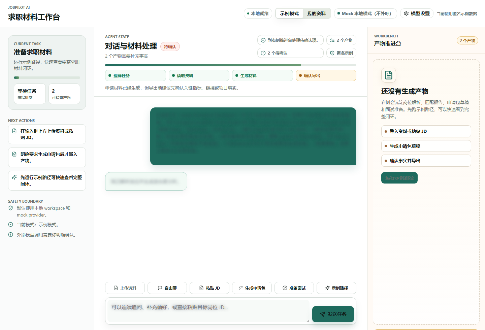
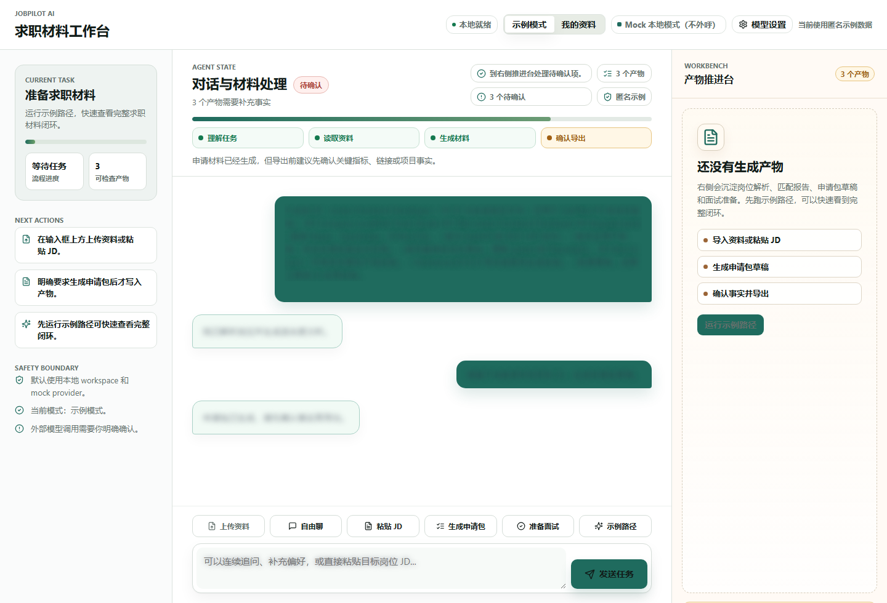
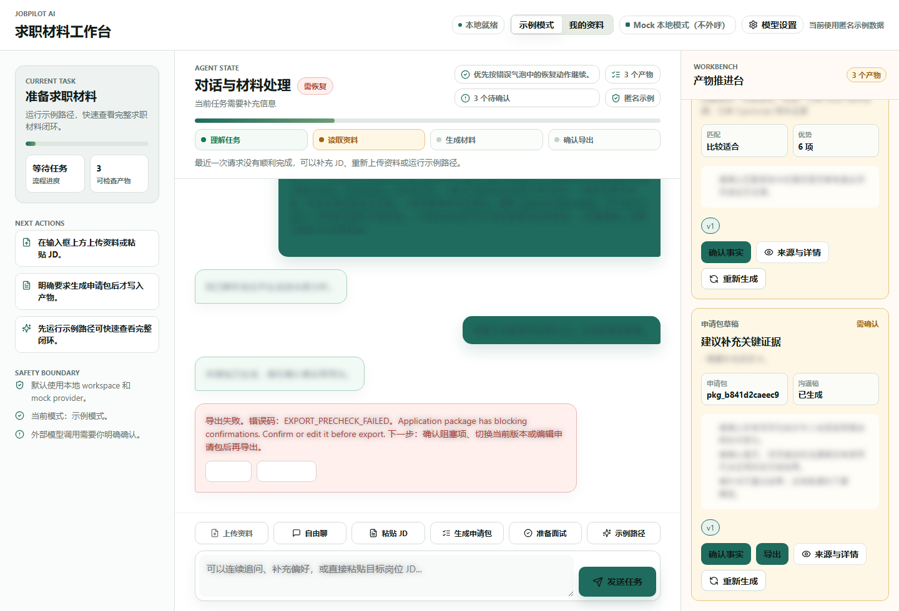
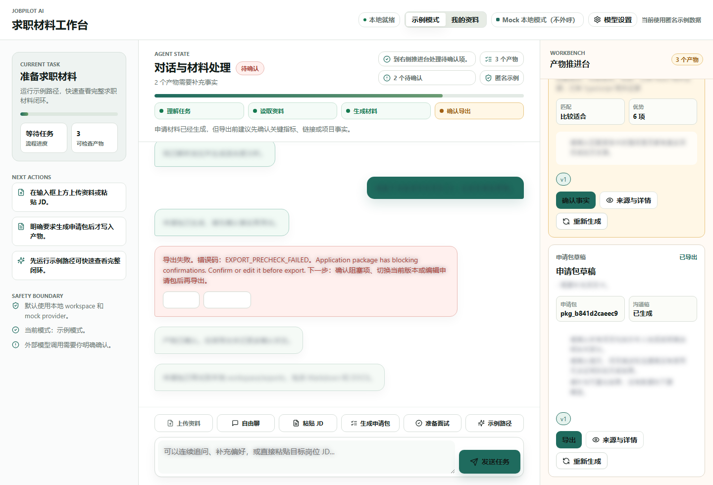
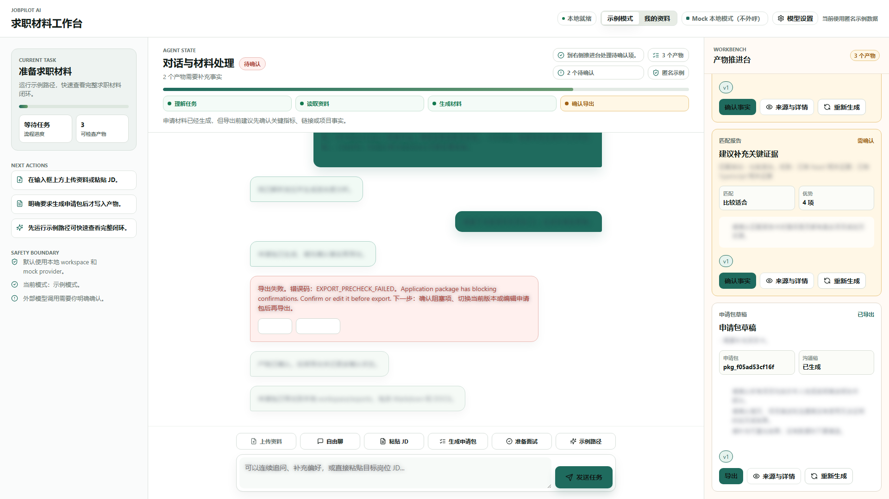
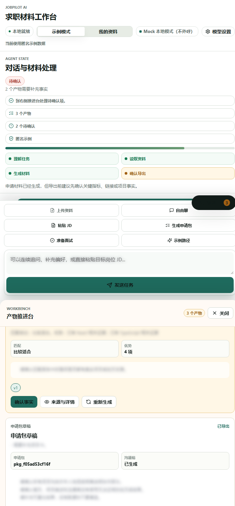
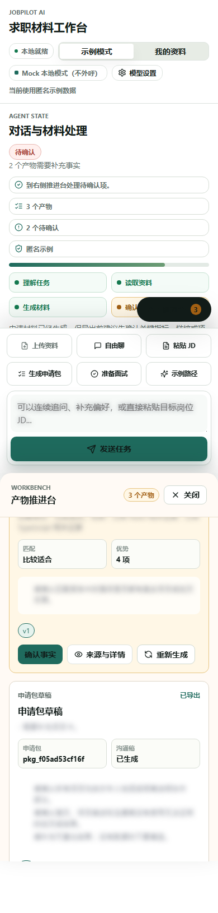

验收结论
结论：本轮支持“P5 合成资料增强自动化候选通过”。不能写成“P5 已冻结”“P5-REAL 已通过”“真实个人资料路径已通过”或“真实外部 provider 默认路径已通过”。
| 检查项 | 结果 | 证据 |
|---|---|---|
| 全量后端/评测回归 | 通过 | .venv/bin/python -m pytest：88 passed, 1 warning |
| 前端构建 | 通过 | npm --prefix apps/chatbox run build：TypeScript 与 Vite build 通过 |
| drawio 架构图 | 通过 | drawio_parse=passed pages=6 |
| 浏览器端到端验收 | 通过 | 三份 persona scenario 均生成独立 HTML 报告和截图目录 |
| 虚假验收风险扫描 | 通过 | 未发现把合成资料写成真实个人资料验收通过的正向声明 |
目标架构与当前实现
目标架构
- Chatbox UI：资料入口、连续对话、Agent 状态机、产物推进台、确认与导出。
- FastAPI API：workspace、文件导入、profile/JD/application/artifact/chat 接口。
- ChatCore：默认本地 mock/keyword 路由，区分自由追问、状态查询和显式工具触发。
- JobPilot Domain Tools：生成 career facts、job parse、match report、application package、interview prep。
- SQLite workspace：本地保存聊天、产物、版本、确认状态和导出文件。
- Acceptance Evidence：pytest、前端 build、drawio parse、Chrome/CDP 截图和 HTML 报告。
当前实现
- React/Vite Chatbox 已显示本地就绪、示例/我的资料、Mock 本地模式和模型设置入口。
- 页面支持上传资料、自由聊、粘贴 JD、生成申请包、准备面试等输入框上方快捷动作。
- 对话与材料处理区作为可视化状态机，展示理解任务、读取资料、生成材料、确认导出。
- 产物推进台展示匹配报告、申请包草稿、确认项、版本、来源详情和导出状态。
- 移动端将 workbench 收束为底部抽屉，关键按钮可见并可操作。
- PiAgent bridge 超时阈值已从固定 15 秒改为可配置默认 45 秒，并在非 strict 模式可控降级。
本轮可完成的用户体验路径
1. 打开本地 Chatbox
用户看到本地就绪、Mock 本地模式、示例/我的资料边界和安全提示。
2. 导入合成资料
系统通过本地 workspace 读取合成 resume/project，并生成职业事实。
3. 粘贴目标 JD
对话区解析岗位，生成岗位要求、匹配报告和下一步状态。
4. 生成申请包
系统生成申请包草稿，并保留需要确认的事实项。
5. 确认前导出阻塞
未确认事实时导出返回 EXPORT_PRECHECK_FAILED，避免未经确认的正式材料输出。
6. 确认后导出
点击确认事实后，申请包可以导出到本地，推进台显示已导出状态。
三身份验收覆盖
| Persona | 目标岗位 | 独立报告 | 结论 |
|---|---|---|---|
| 运营数据分析转前端 | Junior Frontend Developer | 查看报告 | 通过 |
| 手工测试转自动化全栈 | QA Automation / Full-stack Assistant | 查看报告 | 通过 |
| 数学教师转教育科技前端 | EdTech Frontend Developer | 查看报告 | 通过 |
关键截图证据
桌面路径：JD 解析与匹配报告

确认与导出门槛



响应式证据



代码检视、文档审计与 PRD 规格检视
| 类别 | 结论 | 状态 |
|---|---|---|
| 代码检视 | 本轮发现并修复 PiAgent bridge 15 秒超时阈值过窄问题；P5 主路径无阻塞回归。 | 通过 |
| 文档审计 | PRD、目标架构、验收门槛、drawio 和 stage review 仍保持 P5/P6/P7/P8+ 边界一致。 | 通过 |
| 功能完整性 | 资料导入、JD 解析、申请包生成、确认门槛、导出、多视口证据在合成资料路径下通过。 | 通过 |
| 测试覆盖 | pytest 覆盖 P0-P5 eval、provider redaction、workspace privacy、PiAgent fallback、P5 synthetic realism；浏览器报告覆盖真实 UI 路径。 | 通过 |
| 概念一致性 | mock/local 默认、合成资料边界、真实资料需授权、真实 provider opt-in 均保持一致。 | 通过 |
未验证范围
- 未使用用户真实个人资料；本轮三份 persona 均为合成资料。
- 未调用 MiniMax、DeepSeek、OpenAI-compatible 等真实外部 provider。
- 未验证真实招聘网站投递、自动海投、SaaS 登录、多租户、Billing、ASR 或会议平台。
- 未替代人工体验认可，也不能作为最终产品化发布证明。